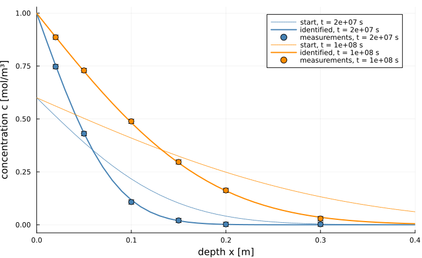

Identifying a diffusion coefficient
The Fickian diffusion example solves the forward problem: given the diffusion coefficient $D$ and the concentration $c_\text{in}$ imposed at the inlet, compute the concentration profile. A laboratory faces the opposite question. It measures a few concentrations at a few depths, for instance on slices ground from a core, and wants the $D$ and $c_\text{in}$ that explain them. This is the inverse problem.
It is solved here by least squares: find the parameters $\theta$ that minimize
\[\Phi(\theta) = \frac{1}{2} \sum_i \big(c_i^\text{sim}(\theta) - c_i^\text{obs}\big)^2 .\]
Gauss–Newton and Levenberg–Marquardt iterations need the Jacobian $J_{ik} = \partial c_i^\text{sim} / \partial \theta_k$, which tells how each simulated measurement moves when a parameter moves. Every simulated value comes out of a full transient finite volume solve, so this Jacobian is the derivative of the solve. It is computed by automatic differentiation, with ForwardDiff, which the next section explains.
The page answers four questions in turn:
- how to make a transient solve differentiable;
- whether the derivative it returns is right;
- which parameters the measurements can determine at all;
- how well they are determined, and what limits that.
using PoroMechanics
using VoronoiFVM
using ExtendableGrids
using OrdinaryDiffEq
using ForwardDiff
using SpecialFunctions
using LinearAlgebra
using Random
using Printf
using PlotsWhat automatic differentiation does
There are three ways to get the derivative of a computed result with respect to a parameter.
- Finite differences run the computation twice, at $\theta$ and at $\theta + h$, and divide the change by $h$. The result is an approximation, and its error depends on $h$: too large and the slope is wrong, too small and rounding errors dominate.
- Symbolic differentiation writes out the formula of the derivative. That is impractical for a result that comes out of a mesh, a Newton loop and a thousand time steps.
- Automatic differentiation applies the rules of differentiation to every elementary operation the computation performs, as it performs them. The result is the exact derivative of the computation as programmed, up to rounding, and there is no step to choose.
ForwardDiff implements the forward mode with dual numbers. A dual number carries a value and a derivative, written $a + a'\varepsilon$ with the rule $\varepsilon^2 = 0$. Arithmetic on dual numbers applies the differentiation rules by itself:
\[(a + a'\varepsilon)(b + b'\varepsilon) = ab + (a'b + ab')\,\varepsilon, \qquad \exp(a + a'\varepsilon) = e^{a} + e^{a} a'\,\varepsilon .\]
The first is the product rule, the second the chain rule.
Take $f(x) = x^2 e^x$ at $x = 2$. The computation starts from its input, so the input must already carry a derivative for the rules to propagate. That derivative is the seed: the derivative of the input with respect to the variable chosen for differentiation. To differentiate with respect to $x$ itself, the seed is $dx/dx = 1$.
a = ForwardDiff.Dual(2.0, 1.0) # x = 2, seeded with dx/dx = 1: differentiate with respect to x
fa = a^2 * exp(a)Dual{Nothing}(29.5562243957226,59.1124487914452)Each operation passes the derivative along:
| quantity | value | derivative part |
|---|---|---|
| $a$ | $2$ | $1$ (the seed) |
| $a^2$ | $4$ | $2 \cdot 2 \cdot 1 = 4$ |
| $e^a$ | $e^2$ | $e^2 \cdot 1 = e^2$ |
| $a^2 e^a$ | $4e^2 \approx 29.56$ | $4 \cdot e^2 + 4 \cdot e^2 = 8e^2 \approx 59.11$ |
The computation never used a formula for $f'$. It only applied the product rule and the chain rule to each operation, with numbers, as the last column shows. The formula $f'(x) = (2x + x^2)\,e^x$ appears here only to check the result: at $x = 2$ it gives $8e^2 \approx 59.11$, the derivative part found above. For the finite volume solve below, no such formula exists to check against, and the derivative is compared with finite differences instead.
Without the seed of 1, the chain would have no derivative to multiply.
The seed says with respect to what the derivative is taken:
| seed | meaning | derivative part |
|---|---|---|
| 1 | $a$ is the variable, $a = x$ | $f'(2)$ |
| 0 | $a$ is a constant | $0$ |
| 3 | $a = 2 + 3s$, derivative with respect to $s$ | $3 f'(2)$ |
for seed in (1.0, 0.0, 3.0)
z = ForwardDiff.Dual(2.0, seed)
@printf("seed %.0f -> derivative part %.2f\n", seed, ForwardDiff.partials(z^2 * exp(z))[1])
endseed 1 -> derivative part 59.11
seed 0 -> derivative part 0.00
seed 3 -> derivative part 177.34With several parameters, each one gets its own seed. For $(D, c_\text{in})$, the first carries the derivative parts $(1, 0)$ and the second $(0, 1)$. Each result then carries two derivative parts, which form its row of the Jacobian. ForwardDiff.derivative and ForwardDiff.jacobian set these seeds and read the results for you. Writing Dual by hand, as above, only serves to show the mechanism:
ForwardDiff.derivative(x -> x^2 * exp(x), 2.0)59.1124487914452Nothing changes for a longer computation. Every addition, product, exp, linear solve and time step in the finite volume code passes the $\varepsilon$ part along. At the end, the $\varepsilon$ part of each simulated concentration is its derivative with respect to the seeded parameter. With several parameters, a dual number carries one $\varepsilon$ part per parameter, and all of them travel through a single run. That is what ForwardDiff.jacobian does.
Two levels of automatic differentiation are nested in this page, and they do not interfere:
- VoronoiFVM differentiates
storage!andflux!with respect to the unknowns, to build the Jacobian of its Newton iterations. - This page differentiates the whole solve with respect to the parameters $D$ and $c_\text{in}$, to build the Jacobian of the least-squares problem.
ForwardDiff labels each level with its own tag, so the two kinds of $\varepsilon$ are never mixed up.
Automatic differentiation also has a reverse mode, provided by other packages such as Zygote or Enzyme.
forward mode (ForwardDiff) | reverse mode | |
|---|---|---|
| cost | about one computation per parameter, carried together | about one computation per output |
| suited to | few parameters | many parameters and one scalar output, such as a cost function |
| memory | that of the computation | the whole history of the computation must be stored |
With two parameters, the forward mode is the right choice. The reverse mode would pay off if, say, $D$ were identified cell by cell, with hundreds of parameters for a single cost $\Phi$.
The measurements
Six depths are sampled at two ages, about eight months and about three years.
The measurements are synthetic. They come from the analytical solution
\[c(x, t) = c_\text{in} \operatorname{erfc}\!\left(\frac{x}{2\sqrt{D t}}\right)\]
with $D = 10^{-10}$ m²/s and $c_\text{in} = 1$ mol/m³, and not from the finite volume model that is fitted to them. Data generated by the fitted model itself would be reproduced exactly, which would hide the discretization error. Analytical data keep that error visible, and it matters in the last section.
A measurement noise with a standard deviation of 0.005 mol/m³, half a percent of $c_\text{in}$, is added.
const D_TRUE = 1.0e-10 # diffusion coefficient used to generate the data [m²/s]
const C_IN_TRUE = 1.0 # inlet concentration used to generate the data [mol/m³]
const PHI = 0.30 # porosity [-]
const L = 1.0 # length of the column [m]
const SIGMA = 0.005 # standard deviation of the measurement noise [mol/m³]
const X_OBS = [0.02, 0.05, 0.10, 0.15, 0.20, 0.30] # measurement depths [m]
const T_OBS = [2.0e7, 1.0e8] # measurement ages [s]
analytical(D, c_in, x, t) = c_in * erfc(x / (2 * sqrt(D * t)))
# Measurements are ordered by age, then by depth, and every function below uses that order.
Random.seed!(2026)
c_exact = [analytical(D_TRUE, C_IN_TRUE, x, t) for t in T_OBS for x in X_OBS]
c_obs = c_exact .+ SIGMA .* randn(length(c_exact))1. Differentiating a transient solve
To differentiate with respect to $D$ and $c_\text{in}$, those two numbers are replaced by dual numbers. Everything computed from them must then be able to hold dual numbers as well:
- the model:
FickModeltakes the type of its coefficients as a parameter, so a dual $D$ is accepted as is; - the unknowns:
fvm_system(...; valuetype = T)builds a system whose values have typeT.
The usual call, solve(sys; inival, times, control), does not work here. VoronoiFVM chooses each time step from the change $\Delta u$ of the previous one (see Getting Started). That change is a dual number, so the next step and then the time itself become dual numbers too. VoronoiFVM stores the time in a Float64 field, and the solve stops with MethodError(Float64, Dual(…)). Fixed time steps do not avoid it. Differentiating a solve records the details.
The way around it keeps VoronoiFVM for the space discretization and hands the time stepping to OrdinaryDiffEq. ODEProblem(sys, inival, tspan) turns the finite volume system into a system of ordinary differential equations. VoronoiFVM still evaluates storage!, flux! and bcondition!, and still differentiates them for the Jacobian. OrdinaryDiffEq integrates in time, and its step-size control is written to carry dual numbers.
Rosenbrock23 is a linearly implicit method, stable on stiff problems such as diffusion. saveat = T_OBS keeps only the solution at the measurement ages, and reshape(sol, sys) turns the result into the familiar tsol[species, node, step] form.
"""
solve_profiles(D, c_in; phi = PHI, N = 100) -> (x, tsol)
Concentration profiles at the ages `T_OBS`, on a grid of `N` cells. `D`, `c_in` and `phi`
may be dual numbers.
"""
function solve_profiles(D, c_in; phi = PHI, N = 100)
T = promote_type(typeof(D), typeof(c_in), typeof(phi))
grid = simplexgrid(range(0, L; length = N + 1))
model = FickModel(; phi, D, dirichlet = ((1, c_in),))
sys = fvm_system(model, grid; valuetype = T)
inival = unknowns(sys; inival = zero(T))
inival[1, 1] = c_in # consistent with the Dirichlet value, as in the forward example
problem = ODEProblem(sys, inival, (0.0, T_OBS[end]))
sol = OrdinaryDiffEq.solve(
problem, Rosenbrock23();
abstol = 1.0e-9, reltol = 1.0e-7, saveat = T_OBS,
)
return grid[Coordinates][1, :], reshape(sol, sys)
end
"Simulated concentrations at the measurement points, in the order of `c_obs`."
function simulate(D, c_in; phi = PHI, N = 100)
x, tsol = solve_profiles(D, c_in; phi, N)
nodes = [argmin(abs.(x .- xo)) for xo in X_OBS]
steps = [findfirst(==(t), tsol.t) for t in T_OBS]
return [tsol[1, k, n] for n in steps for k in nodes]
endThe parameters are scaled so that both are of order one: $\theta_1 = D / 10^{-10}$ m²/s and $\theta_2 = c_\text{in}$ in mol/m³. Unscaled, the two columns of the Jacobian would differ by a factor of $10^{10}$. Its condition number would then measure the choice of units, not the information in the data, and the damping of Levenberg–Marquardt would act on one parameter only.
simulate(θ::AbstractVector; kwargs...) = simulate(θ[1] * 1.0e-10, θ[2]; kwargs...)
θ_true = [D_TRUE / 1.0e-10, C_IN_TRUE]2. Is the derivative right?
The Jacobian from ForwardDiff is compared with central differences, $\big(c(\theta + h e_k) - c(\theta - h e_k)\big)/2h$. Differences cost two extra solves per parameter and depend on the step $h$. ForwardDiff needs one solve carrying two partial derivatives, and has no step to choose.
J_ad = ForwardDiff.jacobian(simulate, θ_true)
J_fd = reduce(
hcat, map(1:2) do k
h = 1.0e-6
e = [i == k ? h : 0.0 for i in 1:2]
(simulate(θ_true .+ e) .- simulate(θ_true .- e)) ./ (2h)
end
)
println(" t [s] x [m] ∂c/∂θ₁ ForwardDiff ∂c/∂θ₁ differences ∂c/∂θ₂ ForwardDiff ∂c/∂θ₂ differences")
for (i, (t, x)) in enumerate((t, x) for t in T_OBS for x in X_OBS)
@printf(
" %.0e %.2f %+.8e %+.8e %+.8e %+.8e\n",
t, x, J_ad[i, 1], J_fd[i, 1], J_ad[i, 2], J_fd[i, 2]
)
end t [s] x [m] ∂c/∂θ₁ ForwardDiff ∂c/∂θ₁ differences ∂c/∂θ₂ ForwardDiff ∂c/∂θ₂ differences
2e+07 0.02 +1.20308120e-01 +1.20309018e-01 +7.51603660e-01 +7.51604067e-01
2e+07 0.05 +2.30650224e-01 +2.30651365e-01 +4.29017724e-01 +4.29018232e-01
2e+07 0.10 +1.79640911e-01 +1.79640574e-01 +1.14415029e-01 +1.14414867e-01
2e+07 0.15 +5.68837283e-02 +5.68834167e-02 +1.82497477e-02 +1.82496176e-02
2e+07 0.20 +8.87554482e-03 +8.87560366e-03 +1.72409787e-03 +1.72412586e-03
2e+07 0.30 +3.47753798e-05 +3.47808647e-05 +3.33026512e-06 +3.33236549e-06
1e+08 0.02 +5.58910935e-02 +5.58913272e-02 +8.87514440e-01 +8.87514576e-01
1e+08 0.05 +1.32564269e-01 +1.32564788e-01 +7.23625686e-01 +7.23625986e-01
1e+08 0.10 +2.19706954e-01 +2.19707610e-01 +4.79454936e-01 +4.79455306e-01
1e+08 0.15 +2.40974312e-01 +2.40974690e-01 +2.88857416e-01 +2.88857614e-01
1e+08 0.20 +2.07337829e-01 +2.07337801e-01 +1.57385861e-01 +1.57385826e-01
1e+08 0.30 +8.91283101e-02 +8.91280450e-02 +3.40246314e-02 +3.40244893e-02The two agree to about five significant digits, which is the precision of the differences. That precision is set by the solver tolerances and by $h$. The agreement is worst at $x = 0.30$ m at the first age. There the concentration is only about $10^{-5}$, and the differences are lost in the tolerance of the solver.
The second column also has an exact answer. The problem is linear in $c_\text{in}$: doubling the inlet concentration doubles the whole profile, so $\partial c / \partial c_\text{in} = c / c_\text{in}$, which at $c_\text{in} = 1$ is the simulated concentration itself.
c_sim = simulate(θ_true)
@printf("max |∂c/∂c_in − c / c_in| = %.1e\n", maximum(abs.(J_ad[:, 2] .- c_sim)))max |∂c/∂c_in − c / c_in| = 3.1e-08The gap is a few $10^{-8}$, which is the relative tolerance given to the time integration.
3. Which parameters can the measurements determine?
A parameter is determined by the data only if changing it changes the simulated measurements. This is read from the Jacobian: a column of zeros, or a column that is a combination of the others, marks a parameter, or a combination of parameters, that no amount of such data can fix. Its singular values measure this. A singular value close to zero means a direction in parameter space along which the measurements do not move.
The porosity is added as a third parameter to see what happens.
J_phi = ForwardDiff.jacobian(θ -> simulate(θ[1] * 1.0e-10, θ[2]; phi = θ[3] * PHI), [θ_true; 1.0])
s = svdvals(J_phi)
@printf("singular values for (D, c_in, φ): %.3e %.3e %.3e\n", s...)
@printf("largest |∂c/∂φ|: %.1e\n", maximum(abs.(J_phi[:, 3])))singular values for (D, c_in, φ): 1.598e+00 3.738e-01 3.395e-18
largest |∂c/∂φ|: 3.3e-18The third singular value is zero to rounding, and so is the whole $\varphi$ column. The porosity multiplies both the storage and the flux, $\varphi\,\partial c/\partial t = \nabla\cdot(D\varphi\nabla c)$, so it cancels from the equation: no measurement of concentration in the pore solution can determine it. It would take a measurement of the stored amount, for instance the total tracer uptake $\int \varphi\, c \, dx$.
Two other limits do not show in this Jacobian but follow from the solution:
- $D$ and $t$ only appear as the product $D t$. An error on the age of a sample is therefore an error of the same relative size on $D$.
- $D$ and $c_\text{in}$ are separated by the shape of the profile, not by its level. A single measurement cannot do it: a high concentration can mean a large inlet value or a fast diffusion. Several depths are needed.
With $\varphi$ set aside, the Jacobian for $(D, c_\text{in})$ is well conditioned:
@printf("condition number of J for (D, c_in): %.1f\n", cond(J_ad))condition number of J for (D, c_in): 4.34. Calibration
Levenberg–Marquardt interpolates between two methods. With a small damping $\lambda$, it takes the Gauss–Newton step, which solves $(J^\top J)\,\delta = -J^\top r$ and is fast near the solution. With a large $\lambda$, it takes a short step down the gradient, which is safe far from the solution. The damping is lowered after every successful step and raised after every failed one. A step that would make a parameter negative is treated as failed, since a negative diffusion coefficient has no meaning. The same method is used on a constitutive model in Parameter identification.
function levenberg_marquardt(f, θ; λ = 1.0e-3, maxiter = 40)
r = f(θ)
cost = sum(abs2, r)
history = [cost]
for _ in 1:maxiter
J = ForwardDiff.jacobian(f, θ)
H = J' * J
g = J' * r
improved = false
for _ in 1:30
θ_new = θ .- (H + λ * Diagonal(diag(H))) \ g
if all(>(0), θ_new)
r_new = f(θ_new)
cost_new = sum(abs2, r_new)
if cost_new < cost
θ, r, cost = θ_new, r_new, cost_new
λ = max(λ / 3, 1.0e-12)
improved = true
break
end
end
λ *= 5
end
push!(history, cost)
improved || break
abs(history[end - 1] - history[end]) < 1.0e-12 * history[end] && break
end
return θ, history, r
end
residual(θ) = simulate(θ) .- c_obs
θ_start = [3.0, 0.6] # D three times too large, c_in 40 % too small
θ_fit, history, r_fit = levenberg_marquardt(residual, θ_start)
println("iteration sum of squared residuals")
for (k, c) in enumerate(history)
@printf(" %2d %.6e\n", k - 1, c)
enditeration sum of squared residuals
0 2.586589e-01
1 1.065001e-01
2 1.695061e-02
3 5.238447e-04
4 2.514766e-04
5 2.507286e-04
6 2.507284e-04
7 2.507284e-04
8 2.507284e-045. How well are they determined?
If the residuals are pure measurement noise, the covariance of the identified parameters follows from the same Jacobian:
\[\Sigma = \hat\sigma^2 \left(J^\top J\right)^{-1}, \qquad \hat\sigma^2 = \frac{\sum_i r_i^2}{n - p},\]
with $n$ measurements and $p$ parameters. The square roots of its diagonal are the standard errors, and $\Sigma_{12}/\sqrt{\Sigma_{11}\Sigma_{22}}$ is the correlation between the two estimates.
J_fit = ForwardDiff.jacobian(simulate, θ_fit)
σ²_hat = sum(abs2, r_fit) / (length(c_obs) - length(θ_fit))
Σ = σ²_hat * inv(Symmetric(J_fit' * J_fit))
standard_error = sqrt.(diag(Σ))
correlation = Σ[1, 2] / (standard_error[1] * standard_error[2])
@printf("estimated noise: %.4f mol/m³ (true value %.4f)\n\n", sqrt(σ²_hat), SIGMA)
println("parameter true start identified standard error")
@printf("D [m²/s] %.4e %.4e %.4e ± %.1e\n", D_TRUE, θ_start[1] * 1.0e-10, θ_fit[1] * 1.0e-10, standard_error[1] * 1.0e-10)
@printf("c_in [mol/m³] %.4f %.4f %.4f ± %.1e\n", C_IN_TRUE, θ_start[2], θ_fit[2], standard_error[2])
@printf("\ncorrelation between D and c_in: %+.2f\n", correlation)estimated noise: 0.0050 mol/m³ (true value 0.0050)
parameter true start identified standard error
D [m²/s] 1.0000e-10 3.0000e-10 1.0164e-10 ± 1.3e-12
c_in [mol/m³] 1.0000 0.6000 0.9991 ± 4.4e-03
correlation between D and c_in: -0.69Starting three times too high, $D$ is recovered to 1.6 %, and $c_\text{in}$ to 0.1 %. The estimated noise matches the one that was added. Both identified values lie within 1.3 standard errors of the values used to generate the data, as expected when the residuals are noise. The standard errors come out of the same derivatives as the calibration, so they cost nothing more.
The correlation is negative: a slightly larger $D$ spreads the profile, and a slightly smaller $c_\text{in}$ brings its level back down, so the two errors partly compensate.
x, tsol_fit = solve_profiles(θ_fit[1] * 1.0e-10, θ_fit[2])
_, tsol_start = solve_profiles(θ_start[1] * 1.0e-10, θ_start[2])
p = plot(;
xlabel = "depth x [m]", ylabel = "concentration c [mol/m³]",
xlims = (0, 0.4), legend = :topright, size = (720, 440),
)
for (n, (t, color)) in enumerate(zip(T_OBS, (:steelblue, :darkorange)))
label_t = @sprintf("t = %.0e s", t)
plot!(p, x, tsol_start[1, :, n]; ls = :dot, color, label = "start, " * label_t)
plot!(p, x, tsol_fit[1, :, n]; lw = 2, color, label = "identified, " * label_t)
i = (n - 1) * length(X_OBS) .+ eachindex(X_OBS)
scatter!(p, X_OBS, c_obs[i]; yerror = 2 * SIGMA, color, ms = 5, label = "measurements, " * label_t)
end
p
6. Discretization error is not noise
The standard errors above account for measurement noise, and for nothing else. The fitted model also carries a discretization error, which biases the identified values whatever the quality of the data.
To isolate it, the model is fitted to the exact analytical values, without noise, on three grids. Any difference between the identified and the true parameters is then due to the discretization alone. Gauss–Newton, started from the calibrated values, converges in a few steps.
function fit_exact(N; θ = copy(θ_fit))
f = θ -> simulate(θ; N) .- c_exact
for _ in 1:10
δ = -(ForwardDiff.jacobian(f, θ) \ f(θ))
θ = θ .+ δ
norm(δ) < 1.0e-10 && break
end
return θ
end
println(" N cells h [mm] relative bias on D relative bias on c_in")
bias = map((100, 200, 400)) do N
θ = fit_exact(N)
@printf(" %4d %4.1f %+.3e %+.3e\n", N, 1.0e3 * L / N, θ[1] - 1, θ[2] - 1)
θ[1] - 1
end
@printf("\nrelative standard error on D from the noisy calibration: %.1e\n", standard_error[1] / θ_fit[1]) N cells h [mm] relative bias on D relative bias on c_in
100 10.0 -9.075e-04 +3.069e-04
200 5.0 -2.266e-04 +7.618e-05
400 2.5 -5.689e-05 +1.862e-05
relative standard error on D from the noisy calibration: 1.3e-02The bias is divided by about four each time the grid is refined by two: the scheme is second order in $h$, and so is the error it puts into the identified parameters.
On the default grid, the bias on $D$ is small compared with the standard error caused by the noise, so the grid is fine enough for these measurements. More precise measurements would shrink the standard error but not the bias, and the grid would then have to be refined until the bias is small compared with the standard error. A standard error smaller than the discretization bias gives a false sense of precision.
Key points
- The inverse problem needs the derivative of the solve.
ForwardDiffprovides it exactly, in one run carrying dual numbers, without choosing a finite-difference step. - Transient solves are differentiated through
ODEProblem. VoronoiFVM's own time stepping turns the time into a dual number and fails. OrdinaryDiffEq does the time stepping instead, with VoronoiFVM still in charge of the discretization. - The Jacobian tells what the data can determine before any fit is attempted. Here it shows that the porosity cancels from the equation and cannot be identified from concentrations.
- The same Jacobian gives the uncertainty of the identified values, but only the part caused by measurement noise. The discretization bias has to be checked separately, by refining the grid.